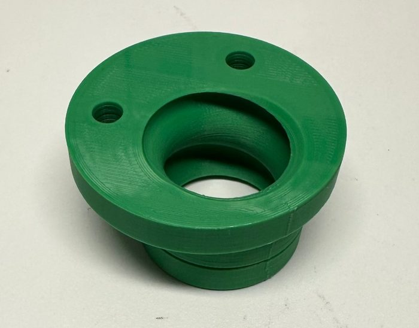
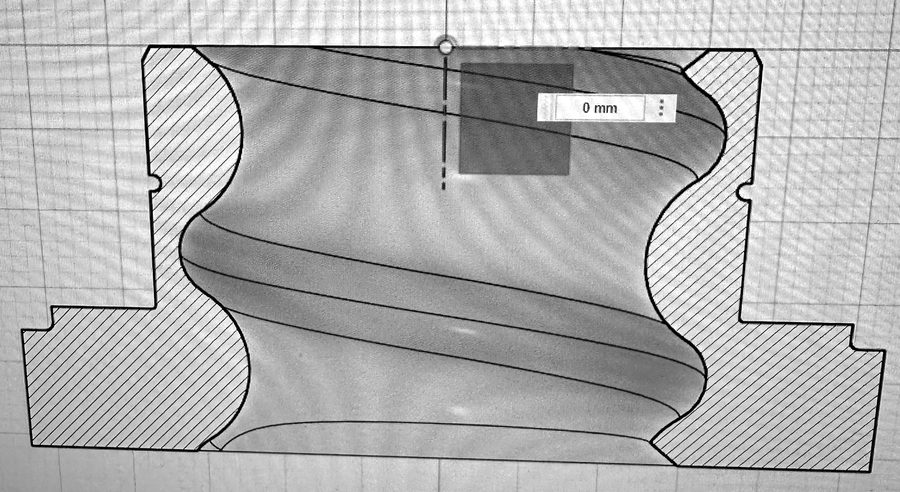
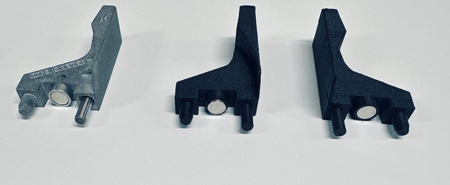
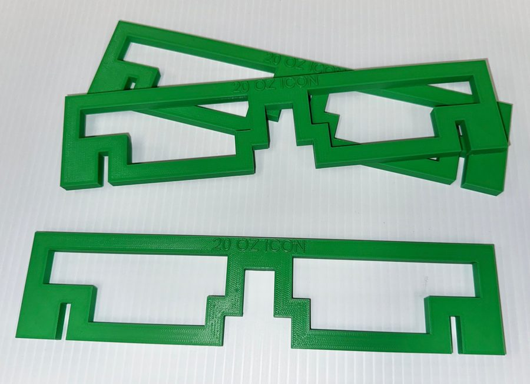
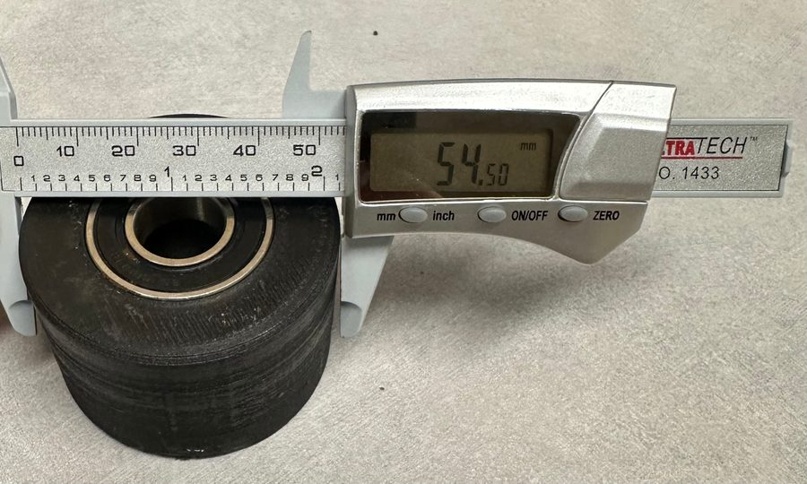
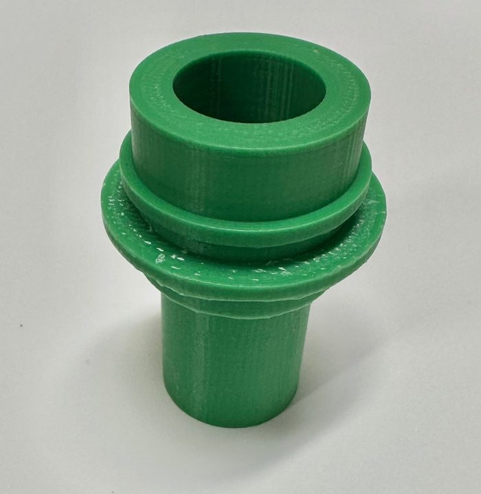

Printed replacement parts at Keurig Dr Pepper
Replacement parts and changeover tools I designed and 3D printed for production-line equipment during my co-op. Together they saved more than $10,000 and improved line uptime.
- Role
- Manufacturing engineering co-op
- Where
- Keurig Dr Pepper, Irving, TX
- When
- July to December 2025
- Savings
- $10,000+ across printed parts
Lead screw nut
This nut rides on a large lead screw that raises and lowers filler machine components during changeover. We needed one fast during a rebuild and had none on hand, so I modeled it in Fusion 360 and printed it, saving $700+ per part over ordering a replacement.




Pusher dogs
Printed replacements for a packing machine's pusher dogs, with magnets set in the same positions as the original. Each one costs 95% less than an original part.


Conveyor rail aligners
Operator tools for setting conveyor guide rails at changeover. Each is embossed with the package it's sized for, so the rails return to the same position every time.


Cam roller and alignment aid
A printed cam roller for a filler machine, built around a bearing, and a printed alignment aid for line equipment.



